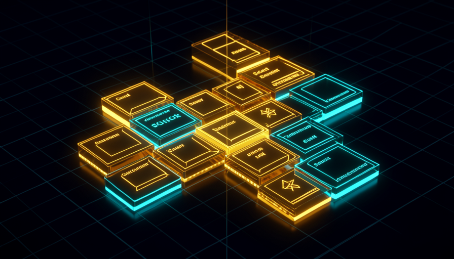

The path of track 4: from the concept of a skill (callable markdown) to building in practice, ending with agents that make decisions on their own and run without you present.
Learning path map
Detailed content
📦 Skills: Concept & Anatomy
The skill is a markdown workflow that you call as a slash command. Here: what it is, where it lives (.claude/skills), the anatomy of SKILL.md, how skills call tools, when to use a skill versus typing, skills versus CLAUDE.md, and how to share and version them.
A Markdown instruction file — conceptually the same thing as a "workflow" (the W layer of WAT), except it’s stored in a special directory and exposed as a slash command.
Stop reexplaining the same task: the process becomes callable and consistent.
Skill = callable workflow; Markdown; same process every time.
Each skill lives in its own folder inside .claude/skills, with a markdown file that defines it; then it appears as a slash command (e.g., /draft-email).
It's how the agent "discovers" the skill and makes it available for you to invoke.
One folder per skill; slash commands became skills; automatic discovery.
O SKILL.md defines the name, description (when to trigger), expected arguments, and step-by-step instructions.
The description tells the agent WHEN to use the skill; the arguments are what it asks for.
Name; trigger description; arguments; steps.
A skill can still invoke tools (Python scripts: web search, scraping, document generation) — the WAT framework remains intact underneath.
A skill isn’t just text: it’s a process that does real work through tools.
Skill ≈ W; tools ≈ T; the agent decides when to run each tool.
Use a skill for repeated workflows, when consistency matters, or for complex instructions that are easy to forget. For a one-sentence task or a one-off experiment, just type it — a skill would be overkill.
Knowing when to package things up avoids both chaos and over-engineering.
Repeated use → skill; one-off → type it; consistency; share.
CLAUDE.md stores only the rules for every session (purpose, objective, framework); task-specific instructions go in skills, which load on demand only when invoked.
Putting everything in CLAUDE.md fills up the context window; skills save tokens.
Every session vs. on demand; 20-50 skills don’t add bulk; context window.
Because the skill is a file in the project folder, it can be versioned in Git and shared with the team — everyone gets the same reliable process.
A battle-tested skill becomes a team asset, not knowledge trapped in one person’s head.
File = versionable; shareable; delegate and forget.

🔨 Building Skills in Practice
Hands-on: request a skill in the official format, build and test the "draft email" skill (/draft-email), invoke without arguments, reuse with clean context, build the “document → slides” skill, plug in a ready-made design skill, and build your own skill library.
You don’t need to know how to write skills: describe the workflow (inputs, behavior, where to save it) and ask the agent to turn it into a slash command following the official format.
Same vibe coding mindset: describe the result, and the AI generates the skill.
Official format; Plan Mode; describe inputs/output.
The first build: a skill that takes bullet points, a recipient, and a tone, then writes a polished, concise, straight-to-the-point email and saves it in the temporary folder. It becomes the slash command /draft-email.
It’s the canonical example of a reusable skill from end to end.
Arguments (bullets/recipient/tone); SKILL.md; temporary folder.
Calling the slash command without providing data prompts the agent to ask for the missing inputs (recipient, tone, bullets) before running.
The skill is robust: it never runs "in the dark"; it gathers what's needed.
Input collection; missing arguments; guided experience.
To reuse it, you clear the conversation (/clear) and calls the slash command again with new inputs — fresh, consistent output that always follows the same rules.
Clean context = predictable runs; the skill ensures the same standard.
Clear between uses; consistency; just ask to make changes.
A second skill that reads a document, extracts the key points, and creates a professional presentation — using Python tools under the hood.
Shows the skill summarizing long content into a structured, reusable deck.
Summarize → structure; generation tools; iterate on the design.
Plugging in an existing design skill improves visual quality without requiring you to describe every design detail manually.
Skills are composable: you layer a design skill on top of your workflow.
Skill composition; design skill; reuse of ready-made knowledge.
A catalog of ready-to-build skill ideas: notes → actions, data → PDF, email, meeting summary, research brief.
Gives you concrete starting points to build your own library.
Catalogs; battle-tested skills; save what works.
🤖 Agents: Local, Scheduled & Event-Driven
The leap to systems that make decisions on their own: what an agent is (reasons, adapts, self-heals), an on-demand local agent, the self-improvement loop, a scheduled agent (cron), an event-driven agent (webhook), the agentic gap, designing for production from the 1st prompt, and when an “agent” is just a script.
Unlike traditional automation (where you connect each step), an agent receives the desired outcome and reasons, adapts, asks questions, and self-heals when something breaks.
It's the boundary between "wire everything by hand" and "specify the outcome".
Reasons; adapts; self-heals; non-deterministic.
The assistant as a personal agent: researches, assembles files, iterates on the output, and gets smarter with every use — all running locally, with no deploy.
It's the simplest form of agent; it builds intuition before the cloud.
Local; on demand; you watch and learn.
The agent runs a workflow, hits an error, diagnoses it, fixes the tool, and updates the workflow so the error doesn’t happen again — runs get smoother and faster.
It’s the superpower of local agents—and exactly what disappears in production.
Make a mistake → fix it → update; learn from the failure; preserve the fix.
An agent that runs on its own at a scheduled time using a cron pattern (5 fields; e.g., 0 7 * * * = 7 a.m. every day) — researches, synthesizes, and saves the result, without you being there.
It's the first form of agent that scales beyond "when you're around".
Cron (5 fields); runs unattended; schedules.
An agent that wakes up when a webhook (a URL that listens for data) is called, receiving a payload — a "digital doorbell" that kicks off the work.
It’s how a form, an app, or another system triggers your agent.
Webhook = doorbell; payload; Bearer auth.
When the agent runs in the cloud on a schedule/event, the assistant is no longer watching to self-heal: the system runs but doesn't adapt on its own—and a failure can go unnoticed.
It’s the central production risk; it shapes how you design the agent.
No self-healing; silent failure; logs and alerts close the gap.
The four requirements for an unattended build: fixed inputs, structured/predictable output, built-in error handling, and logging at every step — all from the 1st prompt.
Since the agent won’t self-heal, you design for output robustness.
Fixed inputs; structured output; try/catch; log everything.
Not every automation task needs reasoning: if the task is fixed and predictable, a deterministic script is cheaper and more reliable than an agent — and that’s a valid choice.
Knowing the difference helps you avoid paying for intelligence you don’t need.
Deterministic vs. agentic; "boring is beautiful"; cost vs. adaptability.